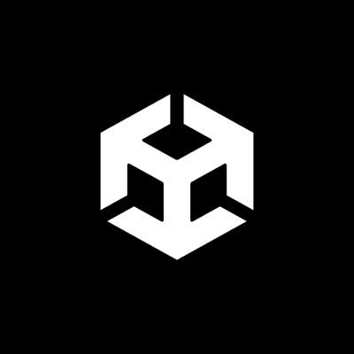

Mon Histoire
Mon parcours dans le monde du jeu n'a pas commencé devant un écran, mais autour d'une table. Jouer à des jeux de société m'a appris à décortiquer les mécaniques avant même de toucher à un moteur de jeu : comprendre l'équilibre des règles, l'importance de l'alchimie entre les joueurs, et la satisfaction d'un système bien huilé. Cette curiosité s'est naturellement étendue aux jeux vidéo en grandissant, où j'ai appris à observer l'architecture des niveaux, la narration environnementale et, bien sûr, les mécaniques elles-mêmes.
Mon approche du Game Design est le résultat d'un équilibre entre précision et émotion.
Passionné par les œuvres de Tolkien et la densité d'univers comme ceux de Cyberpunk 2077 ou League of Legends, je vois le Narrative Design comme une architecture complexe où le moindre détail métaphorique renforce l'immersion.
Cette recherche de précision et d'émotion se reflète aussi dans mes inspirations, comme Frédéric Chopin : de mes racines franco-polonaises, j'ai hérité d'une sensibilité pour la complexité virtuose mise au service de l'émotion. Cela se traduit encore plus dans mon approche de l'UX et du Game Feel : une complexité technique invisible qui permet au joueur de ressentir une émotion pure et fluide.
Sur le terrain, mon expérience du volley-ball m'a donné une compréhension pointue des dynamiques collectives et de la transmission d'émotions partagées. Que ce soit à travers la profondeur mécanique de Rocket League ou l'exigence stratégique des roguelikes, je m'efforce de rechercher des expériences où la précision des systèmes rencontre la satisfaction de repousser ses propres limites.
Mon objectif est simple : concevoir des mondes riches et des mécaniques profondes qui, une fois en main, transforment chaque session en un moment de synergie inoubliable.
COMPÉTENCES
TECH & MOTEUR

Unity C# / Visual Scripting
C# / Visual Scripting
 Git / Fork
Git / Fork
CONCEPTION
OUTILS
 Figma
Figma
 Blender
Blender
 Excel
Excel
 Google Sheets
Google Sheets
 Notion
Notion
02 PROJETS
CHROMESTESIA
Un jeu de plateforme 2.5D basé sur une mécanique de changement de son et de couleur.
BLOODLUST
Un jeu d'action viscéral centré sur le "game feel" et l'impact des coups.
UNGOR BOK
Jeu de plateforme à un bouton basé sur une mécanique de grappin.
SOISY TON JEU
Aide à l'organisation d'événements ludiques réguliers.
MONSTER HUNTER: UX REFOCUS
Refonte complète d'une interface dense pour réduire la charge cognitive, aboutissant à un prototype interactif.
MON PARCOURS
Licence de Musicologie
Sorbonne Université
Développement de la rigueur académique et analyse de structures complexes.
Ce que j'en retiens : J'ai appris à gérer le rythme, le pacing et l'harmonie—des compétences que je transpose aujourd'hui dans le flux du Level Design et le Game Feel.
Master en Game Design
ISART Digital Paris
Expérience de production complète sur Unity (C#). Spécialisation en Game Feel et UX.
Ce que j'en retiens : Apprendre à faire le pont entre les intentions créatives et les contraintes techniques.
Recherche de Stage / Emploi
Game Designer / Level Designer / UX DesignerPrêt à rejoindre une équipe et relever de nouveaux défis. Ouvert aux opportunités en France et à l'international.
M'EMBAUCHER